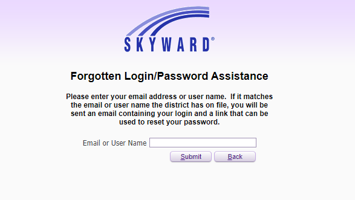
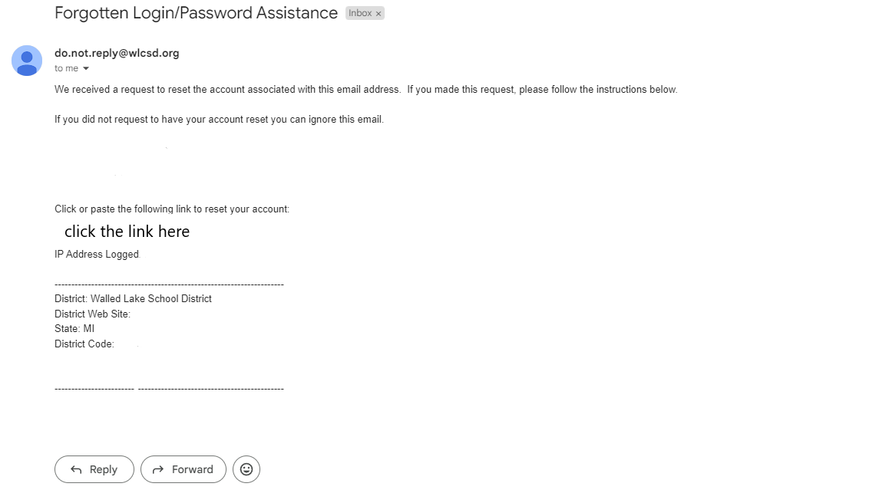
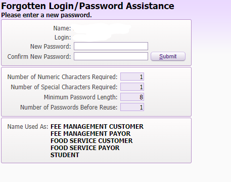

To reset your password, click "Forgot your Login/Password?".

Enter your Skyward username or the email associated with the account. An email will be sent out to the email associated to the Skyward account. It should take around 2 minutes to send.

Go to your email. There should be an email from do.not.reply@wlcsd.org called "Forgotten Login/Password Assistance." Click on the link it gives you to reset the account password.

If a parent account is resetting a student account, you will get emails for each student assocaited with your account along with an email to reset your own password. If you only want to reset one students account, just use the link on email that has the student's name.
Enter a new password for your account, and you can now log back into your account with the new password.

If you don't know your school ID please talk to someone in your schools IT department or the front desk.